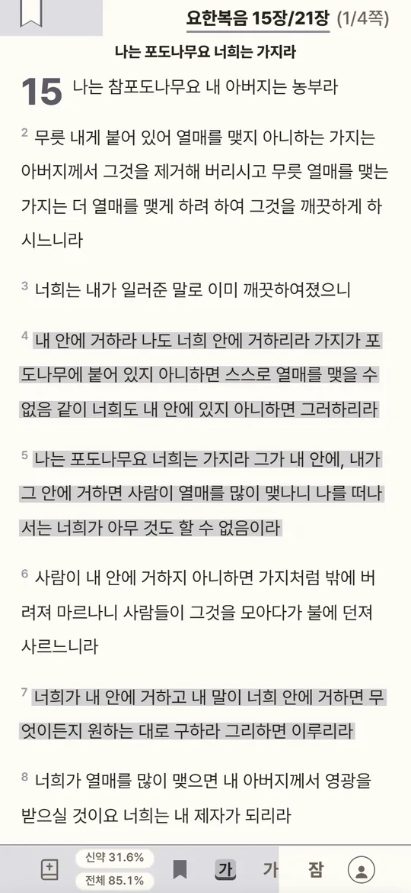
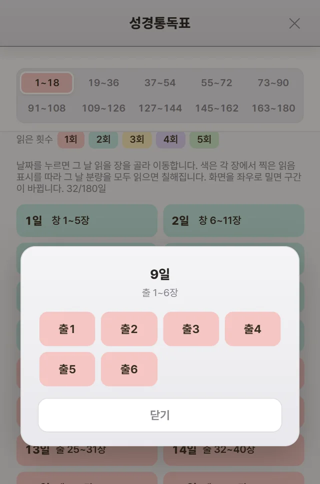
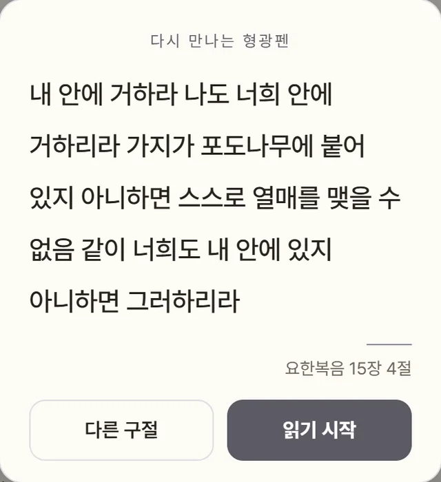
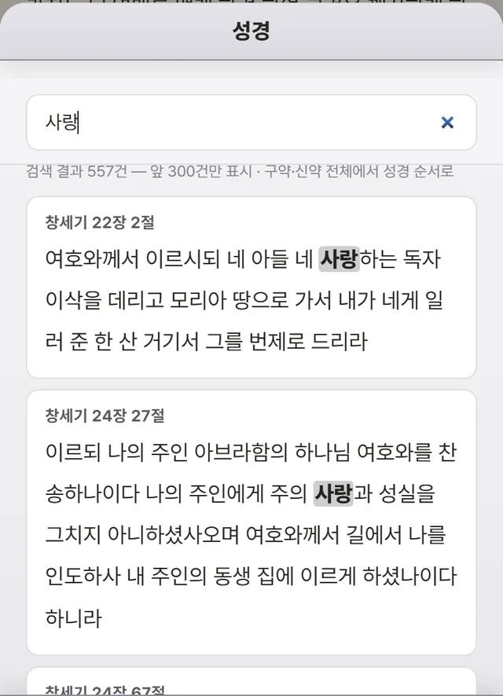
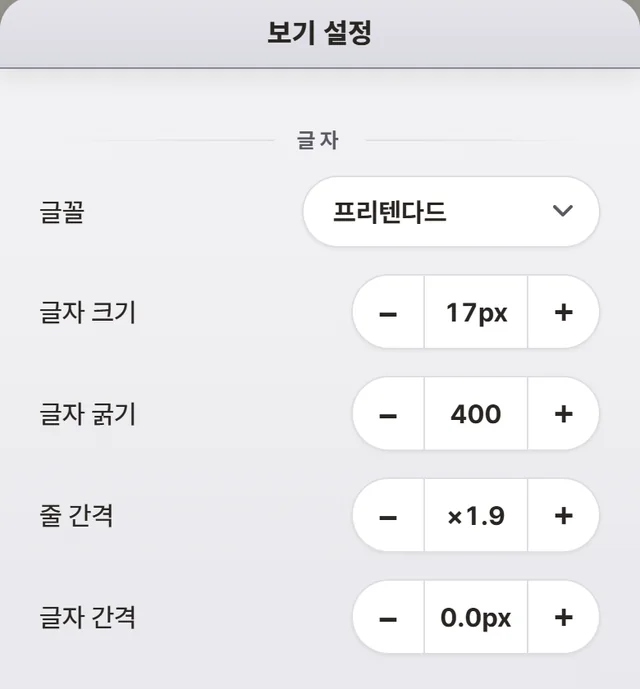

모든 기기에 이어져요
형광펜 · 가름끈 · 읽은 횟수 · 별표가 폰 · 태블릿 · PC에 같이 맞춰져요. 아침엔 폰으로, 저녁엔 태블릿으로.
180일 성경통독 · 개역개정
통독표에서 날짜만 누르면 그날 읽을 장이 바로 열려요. 책장을 넘기듯 읽고, 마음에 닿은 절엔 형광펜을.
개역개정(대한성서공회) · 무료 · 앱스토어 설치 없이 · 인터넷 없이도

180일 통독표
책을 찾고 장을 넘길 필요가 없어요. 날짜만 누르면, 그날 분량이 바로 열립니다.

형광펜 · 별표
앱을 열 때마다 내가 칠했던 구절 하나가 먼저 인사해요. 쌓아 두기만 하던 밑줄이 하루를 여는 말씀이 됩니다.

읽는 화면


가입하면
형광펜 · 가름끈 · 읽은 횟수 · 별표가 폰 · 태블릿 · PC에 같이 맞춰져요. 아침엔 폰으로, 저녁엔 태블릿으로.
가입하기 전에 이 기기에서 칠한 형광펜과 읽은 기록은 처음 로그인할 때 함께 옮겨져요.
성경 전체가 기기에 저장돼요. 지하철 · 비행기 · 수련회에서도 그대로 펼쳐집니다.
함께 쓰는 기기도 안심 — 로그아웃하면 이 기기에서만 사라지고, 다시 로그인하면 그대로 돌아와요.
앱처럼 쓰기
브라우저로 열고 홈 화면에 추가하면, 아이콘을 누를 때 바로 성경이 열려요.